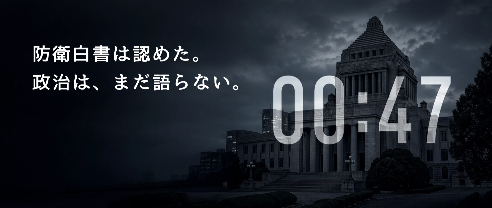

Articles
7 本
国家はトリアージを語れるか——飽和攻撃が突きつける政治の空白
「全弾防護は困難」と防衛白書は認めた。では何を優先して守るのか。政府は装備を積み上げながら、この問いだけを語らない。語らないことも政治的決断だ——「守るものを決めている国家」だけが抑止力を持つ。
安全保障論争という名の信仰告白——なぜ議論は噛み合わないのか
「攻撃していいのか」という問いの立て方が、すでに間違っている。憲法9条をめぐる旗の奪い合いが「保守の証明」と化した瞬間、保守は信仰告白の政治に転落している——安保論争が倫理論争に堕落し続ける構造と、戦略への転換条件を解剖する。
引き金を引くのは誰か——ＡＩと戦争、そして責任を失う文明
人間が自らの手で引き金を引かなくなったとき、文明は進歩するのではない。ＡＩとは判断の外部化であり、戦争とは暴力の外部化である——両者に共通する核心は、人間が自らの行為の帰結を引き受けなくなるという一点にある。

「ホルムズ危機50日」——戦争はもう「撃たない」、それでも国家は壊れる
1日あたり1,100万バレルの供給喪失。だが問題は「不足」ではなく「不確実性」だった——保険料の高騰が物流を麻痺させ、撃たずして封鎖が完成した。21世紀型戦争の核心がここにある。

兵器庫ではなく、政治の中でしか行えないこと
「守られる国家」から「自ら守る国家」へ。専守防衛の再定義とは軍事ドクトリンの修正ではなく、日本が安全保障の最終責任を政治として所有し直す作業である。弾道ミサイルの着弾まで4〜6分、意思決定に許される時間はさらにその内側にある。問われているのは兵器の性能ではなく、決断の所在だ。
南鳥島に、何を積み上げるのか
東京から約1,900km。太平洋の最果ての孤島・南鳥島に、今、計算された「積み上げ」が静かに進んでいる。レアアース開発、自衛隊拠点化、そして核廃棄物処分場選定——3つの国家意思が、同じ小さな島に重なりつつある。「住民がいないから反対が出にくい」という論理は、民主的な合意形成の基礎を意図的に迂回しているに過ぎない。

「量はある、だが届かない」——ホルムズ危機で露呈した可用性の崩壊
「日本全体として必要となる量は確保できている」——政府はそう説明する。だがホルムズ危機が暴いたのは、総量の不足よりも深い機能不全だった。ガソリン店頭価格は3月2日の158円から16日には190円超へ、わずか2週間で32円の上昇。「倉庫にあるか」ではなく「誰に、何を、どの順番で、どう届けるか」——危機の本質はそこにある。